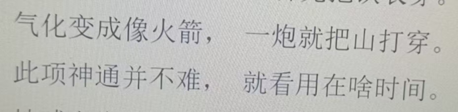

20260624东方经
原始对话记录
再看东方经
提到了火箭，大炮
所以认为不是古人的东西
说菩萨割开脑瓜，还有刀痕，只是借托
说玄乎了才有人看
我也是看了一点点，总觉得哪里不对
以下为编者整理的主题文章
编者整理 · 主题文章
《东方经》是伪经吗：谈"疑伪经"与托古
一句话结论：本页记录对《东方经》提出疑问：书中出现火箭、大炮等现代词，"不像古人的东西"，疑为托古之作，又评"说玄乎了才有人看"。这里介绍佛教"疑伪经"的概念与辨伪常识；原记录只是个人读书疑问，并未下结论。
一、本页原记录
本页很短，主图之后几句：说《东方经》里"提到了火箭，大炮"，因此"认为不是古人的东西"；又说书里讲"菩萨割开脑瓜，还有刀痕，只是借托"，感慨"说玄乎了才有人看"，最后自评"看了一点点，总觉得哪里不对"。属读书疑问。
二、《东方经》是一本什么书
本页所称《东方经》，在民间有一定流传，其成书年代与真伪在读者中本有争议。本篇摘取的是记录者的疑点，而非对该书的定评。本篇不评判该书内容，只借它谈一个通用话题：怎么判断一部经像不像古人所作。态度是先存疑、再求证，不急着信，也不急着判。
三、什么是"疑伪经"
佛典目录学里，把托名佛陀或古人所作、实际来历不明或后人编造的经典称为疑经、伪经，合称"疑伪经"。历代经录（如唐代《开元释教录》）都专设"伪妄乱真录"来标记它们。这套标记法，正是历代高僧"以经录辨真伪"的成果。
四、辨伪的常见线索
| 线索 | 说明 |
|---|---|
| 用语年代 | 出现后世才有的词汇（如"火箭""大炮"）多为托古 |
| 译者与出处 | 译者、翻译年代不可考，来源模糊 |
| 义理合否 | 与共许经论的核心教义相悖 |
| 流传路径 | 只在民间小范围秘密流传，来历不明 |
五、"借托"与"说玄乎"
记录里说"菩萨割开脑瓜还有刀痕，只是借托"——这类具象、猎奇的描写，往往是后人为了"吸引人"而添加的。读时以经录、史传互证，比较稳妥。历代判经时，也会留意这种迎合大众口味的痕迹。记录者用"总觉得哪里不对"来表达审慎，这种态度本身值得保留。
六、常见问题
问：出现现代词就一定是伪经吗？ 不能只凭一点下结论；但当用语年代和来历都对不上时，通常会被列入疑伪之列。
问：本站怎么看《东方经》？ 本篇只讲辨伪方法与常识，不对该书真伪下判断。
七、提醒
- 本页是读书疑问，本篇为方法性补充；
- 读经宜对照经录与正规注疏，慎待孤本秘传；
- 涉及宗教文本，请理性辨析，尊重信仰。
说明与免责：本站为民间修炼、民俗文化与传统文化资料的整理与记录，内容源自传承者口传与个人修习体会，仅供文化交流与研究参考，不构成医疗、健康、投资或任何功效承诺。所述内容属传统术数范畴，请理性看待；如身体不适，请及时就医。请遵守法律法规与公序良俗。